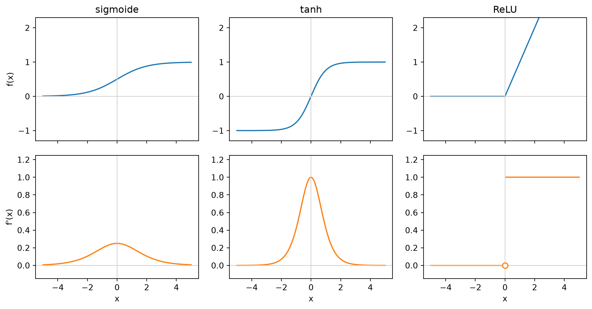
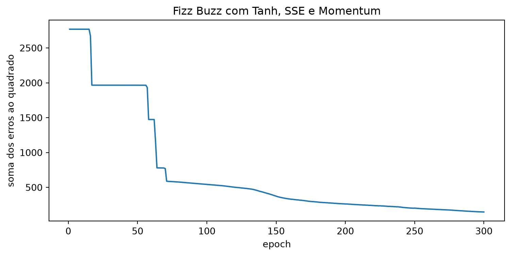

import math
import random
from typing import List
from scratch.deep_learning import (Layer, Linear, Sequential, Sigmoid, Tensor,
tensor_apply, tensor_combine, Momentum, SSE)
from scratch.neural_networks import sigmoidOutras Funções de Ativação
Nota
Esta seção corresponde a Other Activation Functions e a Example: FizzBuzz Revisited, do capítulo 19 de Grus (2019).
A sigmoide caiu em desuso, e há dois motivos.
O primeiro é que \(\sigma(0) = 1/2\): um neurônio cujas entradas somam zero produz saída positiva. Isso significa que a saída de uma camada inteira é sistematicamente deslocada para cima. (O livro-texto para aqui; a leitura usual da área, que ele não faz, é que uma ativação não centrada em zero atrapalha o treino porque a camada seguinte recebe entradas todas do mesmo sinal — e a tanh, logo abaixo, é a correção direta disso.)
O segundo já foi medido na seção 16.2: o gradiente da sigmoide é próximo de zero para entradas muito grandes e muito pequenas. A derivada em 3 vale 0,0452, contra 0,25 no pico. Um neurônio que caia nessa região fica saturado — o gradiente que passa por ele é minúsculo, os pesos dele quase não se movem, e ele pode ficar preso ali indefinidamente.
A tangente hiperbólica
A substituta popular é a tanh, outra função em forma de S, que vai de −1 a 1 e devolve 0 quando a entrada é 0. A derivada dela é simplesmente \(1 - \tanh(x)^2\), o que torna a camada fácil de escrever:
def tanh(x: float) -> float:
# Se x é muito grande ou muito pequeno, tanh é (essencialmente) 1 ou -1.
# Verificamos isso porque, por exemplo, math.exp(1000) levanta um erro.
if x < -100: return -1
elif x > 100: return 1
em2x = math.exp(-2 * x)
return (1 - em2x) / (1 + em2x)
class Tanh(Layer):
def forward(self, input: Tensor) -> Tensor:
# Guarda a saída da tanh para usar na passada para trás.
self.tanh = tensor_apply(tanh, input)
return self.tanh
def backward(self, gradient: Tensor) -> Tensor:
return tensor_combine(
lambda tanh, grad: (1 - tanh ** 2) * grad,
self.tanh,
gradient)
Nota
As duas linhas de guarda no começo de tanh não são zelo excessivo: math.exp(200) estoura o alcance do float e levanta OverflowError. É o mesmo problema de saturação numérica que o Capítulo 13 documentou para a função logística, tratado aqui com um recorte explícito em vez de deixar estourar.
Repare também que a camada guarda self.tanh, exatamente como a Sigmoid guardava self.sigmoids, e pelo mesmo motivo: a derivada se escreve em função da própria saída.
A retificadora
Em redes maiores, a substituta popular é a ReLU (rectified linear unit), que vale 0 para entradas negativas e a identidade para entradas positivas:
class Relu(Layer):
def forward(self, input: Tensor) -> Tensor:
self.input = input
return tensor_apply(lambda x: max(x, 0), input)
def backward(self, gradient: Tensor) -> Tensor:
return tensor_combine(lambda x, grad: grad if x > 0 else 0,
self.input,
gradient)Repare que o backward da ReLU não faz multiplicação nenhuma: ele deixa o gradiente passar inteiro onde a entrada era positiva, e o zera onde era negativa. É o que a derivada de \(\max(x, 0)\) é — 1 ou 0 — e é a razão pela qual a ReLU não satura para entradas grandes: por maior que seja a pré-ativação, o gradiente que a atravessa continua sendo o mesmo que chegou.
Vale ver as três lado a lado:

A linha de baixo é a que decide. A derivada da sigmoide chega no máximo a 0,25 e desaba dos dois lados; a da tanh chega a 1 e desaba dos dois lados; a da ReLU vale 1 em todo o lado positivo, sem desabar nunca — e vale 0 em todo o lado negativo, o que é o defeito dela: um neurônio ReLU que caia na região negativa e fique lá não recebe gradiente algum e morre.
Repare também no círculo vazado em \(x = 0\) no gráfico da derivada da ReLU. A função não é derivável ali, e o código resolve isso por decreto: grad if x > 0 else 0 escolhe 0. Na prática funciona, porque a chance de uma pré-ativação cair exatamente em zero é desprezível.
Exemplo: Fizz Buzz revisitado
Vamos usar a biblioteca para refazer o problema da seção 15.4 — prever, a partir da representação binária de um número, se ele é múltiplo de 3, de 5, de 15 ou de nenhum dos dois. O ponto não é que funciona de novo; é o que sumiu do código.
Os dados são idênticos, e as funções de codificação vêm do pacote, escritas naquele capítulo:
from scratch.neural_networks import binary_encode, fizz_buzz_encode, argmax
xs = [binary_encode(n) for n in range(101, 1024)]
ys = [fizz_buzz_encode(n) for n in range(101, 1024)]
len(xs), len(xs[0]), len(ys[0])(923, 10, 4)923 exemplos de treino, dez bits de entrada, quatro saídas. Os números de 1 a 100 ficam de fora, para servir de teste.
As duas redes, lado a lado
# Capítulo 15
NUM_HIDDEN = 25
network = [
[[random.random() for _ in range(10 + 1)] for _ in range(NUM_HIDDEN)],
[[random.random() for _ in range(NUM_HIDDEN + 1)] for _ in range(4)]
]# Capítulo 16
NUM_HIDDEN = 25
net = Sequential([
Linear(input_dim=10, output_dim=NUM_HIDDEN, init='uniform'),
Tanh(),
Linear(input_dim=NUM_HIDDEN, output_dim=4, init='uniform'),
Sigmoid()
])O de cima diz onde os números moram: uma lista de 25 listas de 11 floats, e uma lista de 4 listas de 26 floats. O + 1 em cada comprimento é o viés grudado no fim, e quem lê precisa saber disso para entender a expressão.
O de baixo diz o que a rede faz: recebe 10, produz 25, aplica tanh, produz 4, aplica sigmoide. As dimensões estão escritas com os nomes delas; o viés não aparece porque virou responsabilidade da camada.
E há uma linha no de baixo que não tem equivalente possível no de cima: Tanh(). No capítulo anterior, a sigmoide estava soldada dentro de neuron_output, e a derivada dela aparecia escrita à mão dentro de sqerror_gradients. Usar outra ativação exigiria editar as duas funções. Aqui é um objeto na lista.
random.seed(0)
NUM_HIDDEN = 25
net = Sequential([
Linear(input_dim=10, output_dim=NUM_HIDDEN, init='uniform'),
Tanh(),
Linear(input_dim=NUM_HIDDEN, output_dim=4, init='uniform'),
Sigmoid()
])
def fizzbuzz_accuracy(low: int, hi: int, net: Layer) -> float:
num_correct = 0
for n in range(low, hi):
x = binary_encode(n)
predicted = argmax(net.forward(x))
actual = argmax(fizz_buzz_encode(n))
if predicted == actual:
num_correct += 1
return num_correct / (hi - low)O laço de treino é o mesmo da seção anterior. Nem uma linha muda: net, loss e optimizer mudaram de conteúdo, e o laço não sabe disso.
import time
import tqdm
optimizer = Momentum(learning_rate=0.1, momentum=0.9)
loss = SSE()
perdas = []
marcos = [1, 25, 50, 100, 200, 300]
historico = {}
t0 = time.time()
with tqdm.trange(300) as t:
for epoch in t:
epoch_loss = 0.0
for x, y in zip(xs, ys):
predicted = net.forward(x)
epoch_loss += loss.loss(predicted, y)
gradient = loss.gradient(predicted, y)
net.backward(gradient)
optimizer.step(net)
perdas.append(epoch_loss)
t.set_description(f"fb loss: {epoch_loss:.2f}")
if epoch + 1 in marcos:
historico[epoch + 1] = (epoch_loss,
fizzbuzz_accuracy(101, 1024, net),
fizzbuzz_accuracy(1, 101, net))segundos = time.time() - t0
print(f"300 epochs em {segundos:.1f} s ({segundos / 300:.3f} s por epoch)\n")
print("epoch perda treino teste")
for epoch in marcos:
perda, treino, teste = historico[epoch]
print(f"{epoch:5d} {perda:9.2f} {treino:.3f} {teste:.3f}")300 epochs em 78.4 s (0.261 s por epoch)
epoch perda treino teste
1 2768.95 0.133 0.150
25 1966.11 0.135 0.170
50 1965.83 0.147 0.230
100 543.27 0.540 0.570
200 262.25 0.798 0.830
300 147.45 0.884 0.890
Tanh, SSE e Momentum, em 300 epochs. A curva sai de um patamar em torno de 2.769 e desce em degraus, não continuamente.
A curva é uma escada. Ela fica exatamente parada em 2.769 por uns dezessete epochs, despenca para 1.966, fica parada de novo por uns quarenta, cai em três degraus seguidos entre os epochs 57 e 72, e só a partir dali começa a descer de forma contínua.
Os patamares são o mesmo fenômeno que a seção 15.4 documentou, e a lição de tê-los de novo é esta: trocamos a ativação, o otimizador, a inicialização e a representação inteira da rede, e o platô não foi embora. Ele não é um artefato do código; é uma propriedade do problema.
O que mudou foi o conteúdo do platô. Lá, a rede presa respondia sempre a classe mais frequente e acertava 53,4% — o palpite preguiçoso do Capítulo 8. Aqui, olhe a coluna de treino da tabela nos dois primeiros patamares: 13,3% e 13,5%, abaixo daquele palpite. A rede não está presa na resposta mais comum; está presa numa resposta pior que ela.
ImportantePor que 300 epochs, e não 1.000
O livro-texto roda 1.000 epochs neste exemplo e relata 90% de acerto no teste, com a observação de que treinar mais melhoraria ainda.
Aqui rodamos 300. O motivo está impresso acima: um epoch custa cerca de 0,12 segundo nesta biblioteca, então 1.000 epochs custariam dois minutos de renderização — e este livro é renderizado por inteiro, do zero, a cada publicação, com o cache de execução apagado de propósito para provar que nada vem da rede. Trezentos epochs custam menos de um terço disso e chegam perto o suficiente do resultado do livro-texto para o argumento ficar de pé.
Esse tipo de corte vai reaparecer, muito maior, na seção 16.8. Ele é a razão pela qual o custo de treino é um assunto deste capítulo e não um detalhe de bastidor.
DicaNa prática: a ativação como objeto, e a lista que não acaba
No PyTorch, cada ativação é uma camada, exatamente como aqui:
import torch.nn as nn
modelo = nn.Sequential(
nn.Linear(10, 25),
nn.Tanh(), # ou nn.ReLU(), nn.GELU(), nn.SiLU(), nn.LeakyReLU()...
nn.Linear(25, 4),
)Trocar nn.Tanh() por nn.ReLU() é editar uma palavra — e no nosso código também é, o que é justamente o resultado desta seção. No MLPClassifier do scikit-learn, ao contrário, a ativação é uma string passada ao construtor (activation='relu'), escolhida entre quatro valores permitidos; não há como usar uma quinta.
A lista de ativações usadas hoje é longa e continua crescendo. Duas que valem citar, porque nasceram dos defeitos que esta seção mostrou:
- A Leaky ReLU troca o zero do lado negativo por uma reta de inclinação pequena, para que um neurônio que caia lá continue recebendo algum gradiente. É a correção direta do problema do neurônio morto.
- A GELU, hoje padrão nos modelos de linguagem, é uma versão suave da ReLU — sem o bico em zero, e portanto derivável em toda parte.
Repare no padrão: as ativações modernas são todas variações sobre o mesmo eixo, o de manter um gradiente utilizável passando. É o mesmo critério que fez a sigmoide ser aposentada, aplicado mais vezes.
Grus, Joel. 2019. Data Science from Scratch: First Principles with Python. 2nd ed. O’Reilly Media.